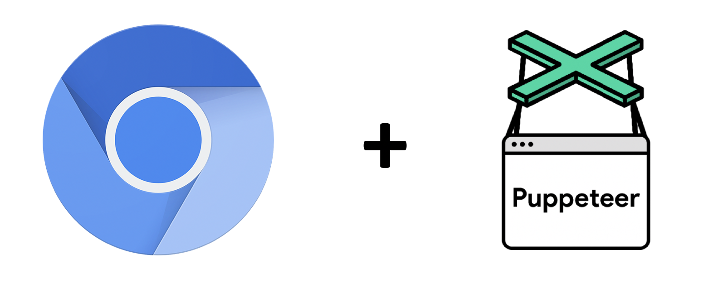
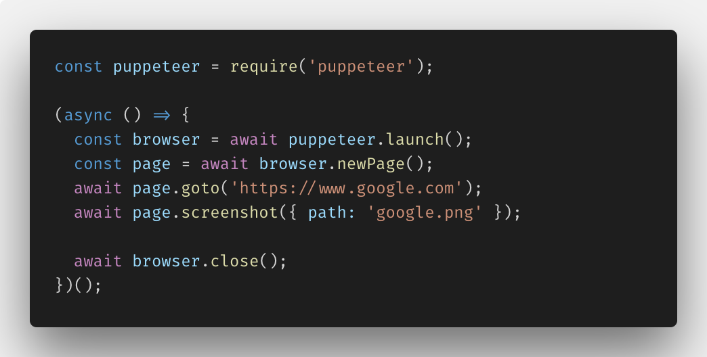
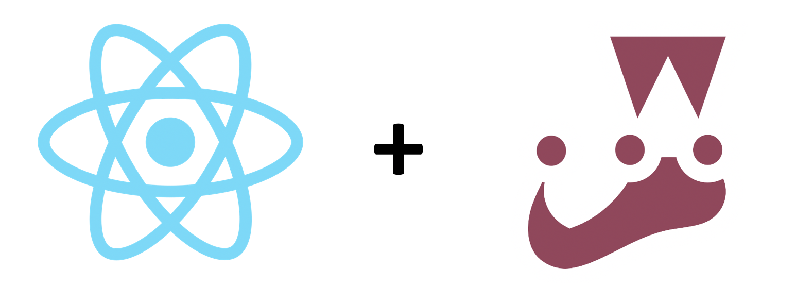
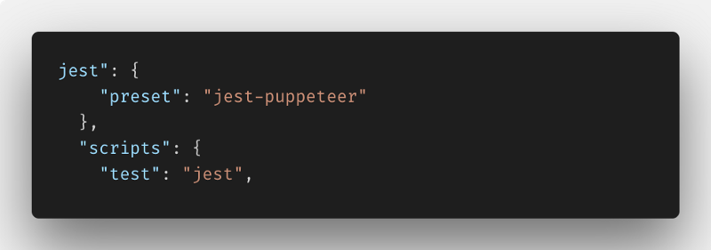
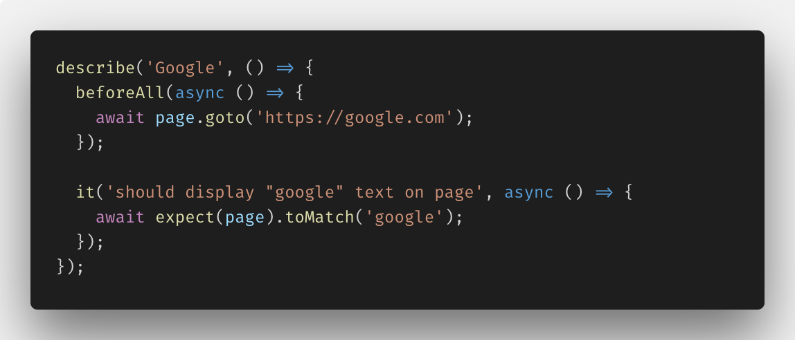

Puppeteer to Write End-to-End Tests
What is End to End Testing & Why is it Important
End-to-end testing is a methodology used to test whether the flow of
an application is performing as designed from start to finish. The
purpose of carrying out end-to-end tests is to identify system
dependencies and to ensure that the right information is passed
between various system components.
What are Headless Chrome & Puppeteer

Puppeteer is a Node library which provides a high-level API to control
Chrome or Chromium over the DevTools Protocol.
Take a Screenshot of a Page

More Cool Features of Puppeteer
- Run in a Docker container or serverless environment
- Intercept network requests
- Capture performance info
- Test a Chrome extension
- Run code in a page
- Emulate Chrome on a mobile device
React & Jest & Puppeteer

Jest & Puppeteer Test

npm install --save-dev jest-puppeteer puppeteer jest
Jest & Puppeteer Test
